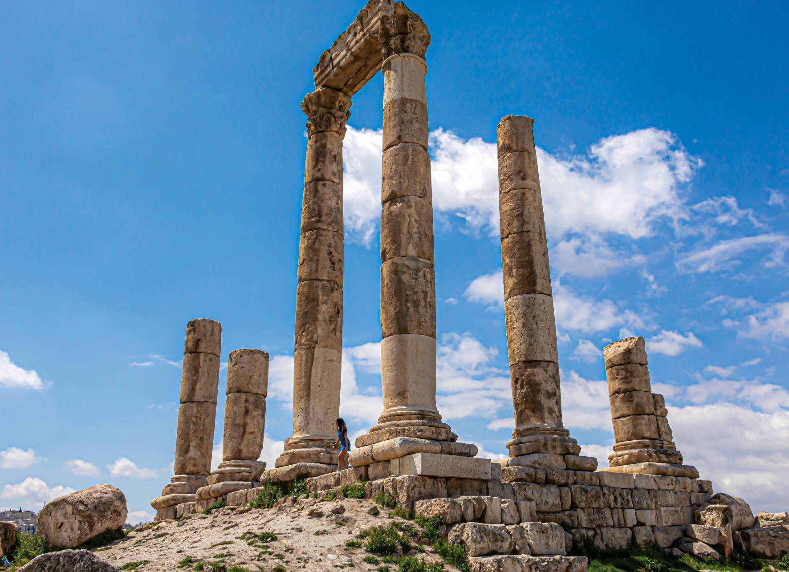

8 days · 7 nights
The Jordan Revealed Tour
A full day in Amman, Madaba and the Dead Sea, Petra and Wadi Rum, then two nights by the Red Sea in Aqaba.
From USD 1,290 per person
Day-by-day itinerary
-
Day 1
Arrival in Amman
Overnight Amman
You’re met at Queen Alia International Airport (QAIA) and taken to your hotel in Amman.
-
Day 2
Amman in depth
Overnight Amman
Start the day as Jordanians do, with a traditional breakfast at a local restaurant. Visit the King Abdullah I Mosque, then drive downtown to the Roman Theatre, the Citadel and the Umayyad Palace, with the Archaeological and Folklore Museums, a short walk through the souks and markets, and a visit to the Jordan Museum. Then explore Rainbow Street, in one of Amman’s oldest neighbourhoods, known for its early 20th-century architecture. After lunch there’s time for a short walk along the street and its small antique and local shops before returning to your hotel.
-
Day 3
Madaba, Mount Nebo and the Dead Sea
Overnight Dead Sea hotel
After breakfast, set out for Madaba. In Madaba, the “City of Mosaics”, see St George’s Church and its Byzantine mosaic map of the Holy Land, and the Archaeological Park, which holds the remains of several Byzantine churches, including the mosaics of the Church of the Virgin, and a school that restores and conserves ancient mosaics. Take a detour to Mount Nebo and its monastery, then continue to the Dead Sea, the lowest point on Earth, for a swim in its warm, salty water.
-
Day 4
Dead Sea to Petra
Overnight Petra
After breakfast, drive south to Petra for a full day in the city. Petra, the “rose-red city, half as old as time”, was the capital of the Nabataeans, and its massive carved monuments and multicoloured stone are a wonder in themselves. The visit begins on horseback, then continues on foot through the Siq, a long, narrow gorge between overhanging cliffs, until the Treasury, Petra’s most famous monument, appears at its end. From there the city opens up little by little.
-
Day 5
Little Petra and Wadi Rum
Overnight Desert camp, Wadi Rum
After breakfast, visit Al-Beida, known as Little Petra, where the Nabataeans received their guests. Continue south to Wadi Rum, Jordan’s largest desert and one of the most spectacular desert landscapes in the world, for a 4×4 tour, and watch the view over a cup of traditional Bedouin tea. Then it’s on to a camp in the desert for dinner.
-
Day 6
Wadi Rum to Aqaba
Overnight Aqaba
After breakfast, transfer to Aqaba in the morning. Check in to your hotel and enjoy a free day at leisure.
-
Day 7
Aqaba
Overnight Aqaba
A free day in Aqaba. If you’d like, go scuba diving or snorkelling on some of the best-preserved coral reefs in the world.
-
Day 8
Aqaba to Amman, departure
After breakfast, transfer to Aqaba airport for a domestic flight to Amman, and continue to your final destination.